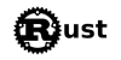
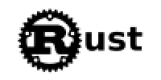

Última versión
La última versión salió el 22 de septiembre de 2022, tal y como anunciaron en su blog:
 Blog oficial de RustHay muy pocas versiones del lenguaje Rust, debido a que es un lenguaje muy nuevo.
Actualmente se encuentra en la versión 1.64.
| Versión | Información sobre ella |
|---|---|
| Pre-alfa | Se publica en enero de 2012. |
| 0.2 | Introdujo clases por primera vez. |
| 0.3 | Agregó varias características, incluidos destructores y polimorfismo mediante el uso de interfaces. |
| 0.4 | Se agregaron rasgos como un medio para proporcionar herencia. |
| 0.9-0.11 | Tenían dos tipos de punteros incorporados. |
| 1.0 | La primera versión estable, se publicó el 15 de mayo de 2015. |
La última versión salió el 22 de septiembre de 2022, tal y como anunciaron en su blog:
 Blog oficial de Rust